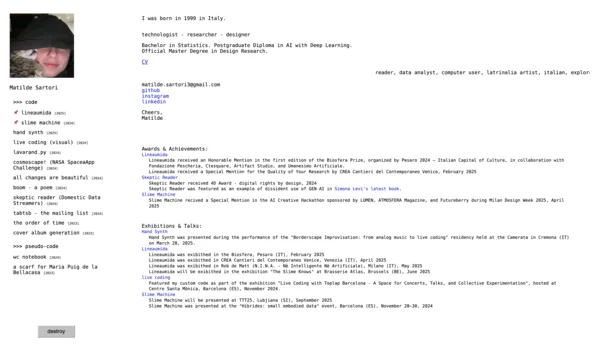

Mani Pulsanti aims to combine and explore generative sound and visual synthesis.
The project is mainly focused on live audiovisual experimentation techniques, especially the ones lead by improvisational approach both through analog and digital means.
The goal is to promote audiovisual experimentation through the organization of events, which the first will be part of BOLOGNA ART WEEK.
The programme consists in an experience of collective experimentation and sound research: various musical synthesis instruments (synthesisers, drum machines, effects...) are made available by the staff, and the participants are invited to do the same by bringing and sharing their own equipment.
The event is followed by a series of A/V performances and talks in collaboration with TOPLAP ITALIA, an online community of creative coders.
'Linea Umida' is the self-titled debut project from the collective i am part together with MATILDE SARTORI 
'Linea Umida' is an audio-visual installation that explores the themes of intelligence and technology from a non-anthropocentric perspective, challenging the dominant cerebrocentric view.
At the center is the slime mould, specifically Physarum Polycephalum, an organism that defies the binarism between individual and collective, existing both as a single entity and as a coordinated group.
Moreover, this organism is decentralized: the slime mould lacks a central system; its control is distributed everywhere and nowhere. And for these reasons it was the inspiration for an algorithm to follow its characteristics.
The developed aaardm.py algorithm is a computer vision tool inspired by the organism's problem-solving methods: in fact, unlike traditional machine learning algorithms which are designed to predict a unique solution efficiently, this is metaheuristic in nature.
JALEO is an exploration on CircUit Bending, the act of modifying existing, often discarded electronics to give them new life, turning them into sonic or visual instruments.
After collecting raw materials such as unused, non-working, toys, video devices and monitors, we explored them to look for GLITCHES and new features to implement in the hardware.
In the tension between what the artefact could or could not become, we learned to design over something that already exists, using a methodology based on adaptability, care, HACKING, and reusing.
The goal is to explore not only the ecological but political nature of technological objects, exposing our right to go beyond the interfaces, the designed, the packed, the ready.
Going beyond their skin, carefully designed to put an unbridgeable gap in between the user and the knowledge to build the technology itself.
organismo is the (temporary) name of my sound experimentation research, especially focused on LIVE COMPOSITION and improvisation, the processes by which i model sound.
this exploration is rarely born with the ambition of resolving and defining itself, but focuses more on the action of constant transformation: layers of sound mix, overlap, cancel each other out.
research is not a preliminary phase, but the aim. each play is just one of the infinite alternative forms the soundscape can assume, capturing each time a different geology.
my path started long ago by playing electric guitar and bass especially into post-punk, shoegaze and psychedelic rock. processing my sound through effects and loops led me to explore the wide realm of electronic music.
widely catalysed by the local electronic and experimental music community in Barcelona, in most recent years i jumped into analog/digital/modular synthesizers and electroacoustic instruments.
Recently im focusing on noise, glitch and industrial, blending it with my strong post-punk influences.
im publishing on
bandcamp
and
soundcloud.

SPIRA's goal is to take microalgae cultivation beyond the academic and research sphere, making the benefits and knowledge associated with this practice accessible.
Although microalgae have demonstrated considerable potential, their applications on a personal scale are still insufficiently explored, remaining mostly confined to the industrial context.
SPIRA aims to reverse this perspective, highlighting how feasible and advantageous it is to adopt microalgae cultivation systems on a small, accessible and easily controlled scale.
The ambition is to exploit the biodesign methodology to bridge the gap between specialised research and general knowledge, promoting inter-species collaboration.
Special emphasis is placed on the act of breathing, the gesture that unites different organisms sharing the same atmosphere.
the installation stems from a larger research on interdisciplinary and interspecies collaboration processes, investigating the potential of relations such as art-science and human-non-human.
An ecological vision is the instinctive fascination with the network that flows just below our perception.
It is not understanding or even pretending to understand this relationships, looking at them from above.
It is more like feeling warm in their womb, seed, shell, or bulb.
Thanks to abstractions, we have learnt to wisely hide these bonds. After all, we have severed them for convenience, we have sacrificed them for our evolution and technologies and buried them under smooth, satin-finished, shiny, clean surfaces.
GAIA explores the possibilities of an alternative evolutionary process, in which technologies are designed from scratch to coexist with the natural infrastructure on which they depend for their very existence rather than oppose it.
The technological interface is no longer an isolated Eden, but part of a system of symbiotic relationships, where the boundary between what is artificial or natural becomes opaque.
The interactive installation is an ode to the COLLAPSE of these barriers and an invitation to experience hybrid scenarios.
This project has born during a one-week residency in La Gran Maison Rouge, with the aim to explore the concept of BORDERS.
We selected to inquire the one in between digital and physical, virtual and analog, by oscillating between these two dimensions trying to explore what happens in between.
By perceiving the new, different environment around us, we used first of all our sight and touch, and then lead by curiosity, we started to investigate the same environment through machine eyes.
In fact, once gathered small natural samples like rocks, rotting wood, dry moss, and dead leaves we used a 3D SCANNER to deep dive into their patterns and textures.
The sensor captured their geometries, creating a virtual representation.
From the screen we have been able to witness the birth of the 3D model progressively assuming the shape of the original sample.
Once collecting a significant amount of scans, we asked ourself: is there a way to materially represent the results we obtained through this digital process?

Plants have diverse and complex ways of communication, enabling them not only to transmit information throughout their own body, but also to different species, such as fungi and insects.
They use chemical, mycorrhizal, and electrical languages, and they have the ability to sense light, temperature, touch, injuries, humidity, gravity, and water.
In our attempt to perceive plants through the electrical signals they emit, we began by isolating and monitoring these signals using ECG (ElectroCardioGraphy) sensors.
Next, we re-created digital twins of these plants by 3D scanning, and we developed a real-time visual feedback of the signals through Touchdesigner.
Each time the plant had a variation on its ELECTRIC ACTIVITY, this was visualized by a live animation on the 3D models.
Converting numerical data into visual interactions aims to deepen our connection with other organisms, and the future opportunity of translating and interpreting
these signals leads to new speculative scenarios, in which human/non-human communication might become possible.


This project has born during a one-week residency in La Gran Maison Rouge in Angoustrine [FR], with the aim to explore the concept of borders.
We selected to inquire the one in between digital and physical, virtual and analog, by oscillating between these two dimensions trying to explore what happens in between.
By perceiving the new, different environment around us, we used first of all our sight and touch, and then lead by curiosity, we started to investigate the same environment through machine eyes.
In fact, once gathered small natural samples like rocks, rotting wood, dry moss, and dead leaves we used a 3D SCANNER to deep dive into their patterns and textures.
The sensor captured their geometries, creating a virtual representation. From the screen we have been able to witness the birth of the 3D model progressively assuming the shape of the original sample.

welcome, you websurfer!
im nicolò baldi (or niente or organismo or organo, still deciding) a...
,
and/or
(pick your favourite and guess yourself any potential lies).
even though not all of it, but much of my research focuses on critical and disruptive use of technology,
especially through DIY/DIT, Open-Source and distributed approaches.
im particulary interesed in trans-disciplinary or anti-disciplinary practices (even better).
i solder stuff, create (or destroy) machines, visualize patterns, type code, evoke unnecessary experimental sounds,
laser cut funky materials and take care of primordial organisms.
i believe in aleatory processes. i hate boring internet.
im releasing some sound projects on bandcamp and
soundcloud.
im currently in BARCELONA.
this website is open source and whole documentation can be found
here
.